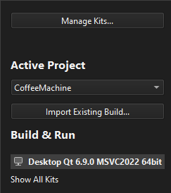
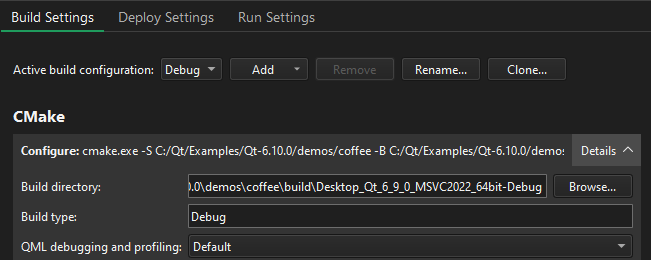
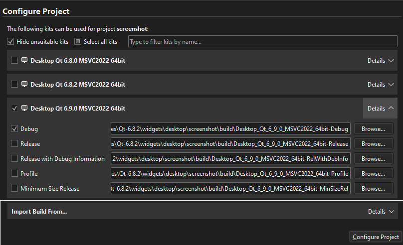
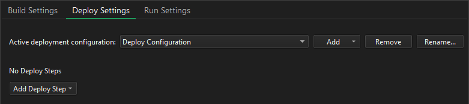
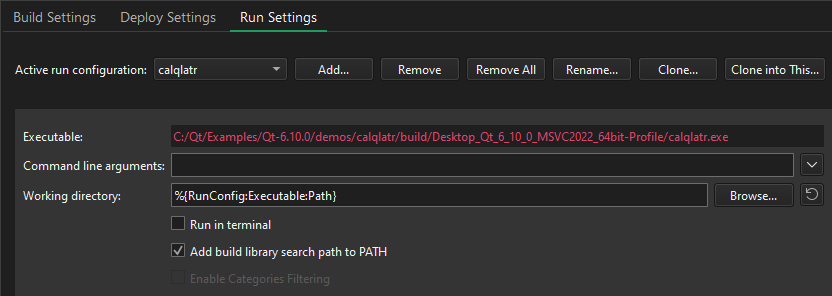

Configuring Projects
When you install Qt for a development or target platform, such as Linux, macOS, Windows, Android or QNX, Qt Online Installer creates kits for the development targets.
Select the kits to use for a project in the Configure Projects view when you open the project for the first time. At least one kit must be active.
To maintain the list of active kits for a currently open project, switch to the Projects mode by selecting Ctrl+5.

To specify build, deploy, or run settings for a kit, select the kit and go to Build Settings, Deploy Settings, or Run Settings.
Specifying Build Settings

Different build configurations allow you to quickly switch between different build settings. Qt Creator creates the the build configurations you select when you create or open projects.

The available configurations depend on the build system used and usually include at least the following:
- Debug
- Release
- Profile
A Debug build has debug symbols that you need for debugging the application but that you should leave out from the release version. Generally, you use the debug configuration for testing and the Release configuration for creating the final installation binary package.
A Profile build is an optimized release build with debug information. It is best suited for analyzing applications.
If you selected CMake as the build system for the project, a Release with Debug Information build configuration is also available. It is similar to a profile configuration, but with QML debugging and profiling explicitly turned off. You can also use a Minimum Size Release build configuration to create the final installation binary package. It is a release build that makes the size of the binary package as small as possible, even if this makes the application slower.
Specifying Deploy Settings
Deploy configurations handle the packaging and copying of the necessary files to a location you want to run the executable at, such as the file system of a device.
The deploy settings to specify depend on the type of the project and on the Run device that you select for the kit.
Qt Creator automatically creates deploy configurations for each build configuration. You can specify deploy steps, such as copying files to devices, separately for each build configuration, such as Debug or Release.

Specifying Run Settings
The run settings to specify depend on the type of the project and on the Run device that you select for the kit.
Qt Creator automatically creates run configurations for each build configuration. You can specify run settings, such as command line arguments or environments, separately for each build configuration, such as Debug or Release.

To prevent Qt Creator from automatically creating run configurations, go to Preferences > Build & Run > General, and then clear Create suitable run configurations automatically.
To automatically synchronize the run configurations, go to Preferences > Build & Run > General, and select an option in Keep run configurations in sync.
Overriding Global Preferences
In Project Settings, you can override global preferences for the project:
- Building and Running
- Clang Tools
- Clangd
- CMake
- Code Style
- Copilot
- C++ Code Model
- C++ File Naming
- Dependencies
- Documentation Comments
- Editor
- GitLab
- Language Server
- Project Environment
- Quick Fixes
- Testing
- To-Do (experimental)
If you have multiple projects open in Qt Creator, select the project to configure in Active Project.
See also Activate kits for a project, Configure projects for building, Configure projects for running, Open projects, Activate custom output parsers, and Get and Install Qt.